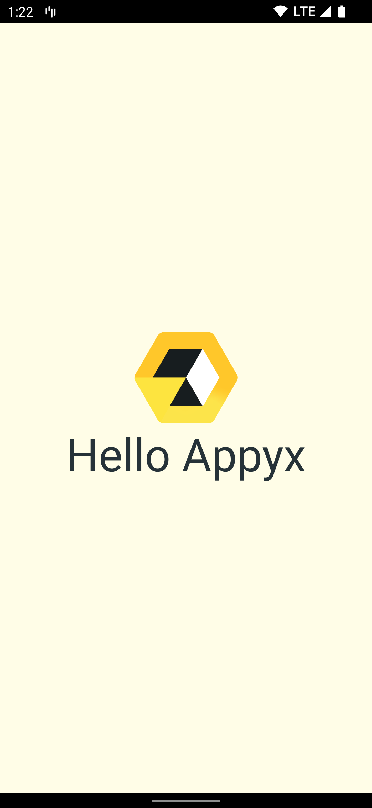

Appyx is a model driven navigation library for Jetpack Compose.
This tutorial will walk you through creating a Hello World app using Appyx.
If you're comfortable with Appyx go ahead and clone the starter-kit and start building awesome apps.
What you'll do
- Install Appyx into your project
- Create a root node
- Plug the root node into your activity
- Say hello
What you'll build

A sneak peek
Appyx is really powerful, complex navigation is something it can be handled with ease. Here's a sneak peak of what this power looks like:

Keep up with our codelabs and you'll be adding more animations in no time, instead of your usual slide and fade.
Access the code
Clone the repo and open the HelloAppyx project.
git clone git@github.com:bumble-tech/appyx-codelabs.git
This tutorial and the TODOs will help you build your first Appyx project.
If at any point you're feeling stuck, check out the solution inside the project.
Next let's add Appyx core and other dependencies to our project:
implementation(libs.appyx.core)
Note: We'll need to update the app theme
Open up themes.xml. It should look similar to this:
<?xml version="1.0" encoding="utf-8"?>
<resources>
<style name="Theme.HelloAppyx" parent="android:Theme.Material.Light.NoActionBar">
<item name="android:statusBarColor">@color/purple_700</item>
</style>
</resources>
Update the parent to Theme.AppCompat.Light.NoActionBar. The result should be similar to this:
<?xml version="1.0" encoding="utf-8"?>
<resources>
<style name="Theme.HelloAppyx" parent="Theme.AppCompat.Light.NoActionBar">
<item name="android:statusBarColor">@color/purple_700</item>
</style>
</resources>
For the purpose of this tutorial we're using version 1.0-alpha09. Check our official page for newer releases
In this step we'll create our RootNode. This will be a subclass of the Node class. Nodes are the building blocks of the tree that Appyx creates for you.
- Open the
RootNode.ktfile. - Change it so it inherits
Node. - Add
buildContext: BuildContexton the constructor and pass it to theNode.
class RootNode(buildContext: BuildContext) : Node(buildContext = buildContext) {
...
}
We'll override the @Composable function View and say hello.
@Composable
override fun View(modifier: Modifier) {
Column(
verticalArrangement = Arrangement.Center,
horizontalAlignment = Alignment.CenterHorizontally,
modifier = Modifier
.fillMaxSize()
.background(color = MaterialTheme.colors.background),
) {
Image(
painter = painterResource(id = R.drawable.logo),
contentDescription = "Appyx Logo"
)
Greeting("Hello Appyx")
}
}
and the Greeting:
@Composable
fun Greeting(message: String) {
Text(
text = message,
style = MaterialTheme.typography.h3.copy(color = MaterialTheme.colors.onBackground)
)
}
In this step we'll host our newly created RootNode inside the MainActivity.
To use the NodeHost inside your activity you'll need to inherit from NodeActivity.
class MainActivity : NodeActivity() {
...
}
This is our starting point.
setContent {
HelloAppyxTheme {
NodeHost(integrationPoint = integrationPoint) {
RootNode(it)
}
}
}
And we're done.
Launch your app. It will look like this:
Check out other code labs to learn more about Appyx.